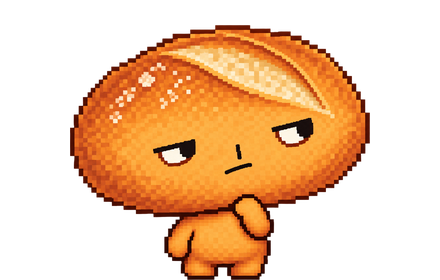

baked · Prototype Lab
Catorze direções para o site, com os mesmos dados (shared/mock-data.js), os mesmos fluxos (home, filtros, mercado, painel de compra) e o mesmo mascote. De A a C muda a hipótese de marca; de D a G muda a estrutura da home.
Estrutura original · A, B e C
A · Ledger
A mais próxima da referência: uma mesa de operações com um pãozinho rabugento em cima.
- Tipografia
- Barlow Condensed + Inter
- Mercados
- Grade densa de cards
- Efeitos
- Spotlight nos cards, borda em movimento no botão, campo de pontos em canvas
- Mascote
- Pousa no topo dos cards e painéis
B · Oven
Uma padaria à noite: a paleta sai da casca do mascote e a prova vira "ponto do assado".
- Tipografia
- Fraunces (serifada) + Manrope
- Mercados
- Bento, com cards largos e estreitos
- Efeitos
- Calor em shader WebGPU, título que surge palavra a palavra, card 3D
- Mascote
- Maior; sobe no título e nos cards
C · Tape
O mascote é pixel art, então o produto inteiro também é: um placar, não um dashboard.
- Tipografia
- Jersey 15 (pixel) + Space Grotesk
- Mercados
- Linhas numa fita, progresso em blocos
- Efeitos
- Ticker infinito, trilho luminoso, grade de células em canvas
- Mascote
- Anda pelo trilho apontando para a linha
Home em mosaico · D, E, F e G
A home passa a abrir com um mosaico: carrossel dos mercados em negociação à esquerda, "Upcoming" e "Closing soon" à direita, os três princípios logo abaixo e então as abas. D, E e F mantêm o visual de A, B e C; a G testa um visual novo.
D · Ledger²
O visual da A sobre o mosaico.
- Base
- A · Ledger
- Mercados
- Carrossel, depois a grade de cards
E · Oven²
O visual da B sobre o mosaico.
- Base
- B · Oven
- Mercados
- Carrossel, depois o bento
F · Tape²
O visual da C, a direção aprovada, sobre o mosaico.
- Base
- C · Tape
- Mercados
- Carrossel, depois a fita em linhas
G · Casino
Cassino assumido: feltro verde, ouro, néon e todos os clichês de aposta. O mascote é o único que não sorri.
- Tipografia
- Bungee + Monoton (néon) + Rubik
- Mercados
- Mesas de feltro, fichas no lugar de Yes e No
- Efeitos
- Letreiro de lâmpadas, caça-níquel, roleta, contagem regressiva, confete
- Mascote
- Pousa na borda das mesas e no bilhete de aposta
Mercado preditivo web3 · H, I e J
Variações de Ledger e Tape, as duas que chegaram mais perto, com cara de mercado preditivo on-chain. Todas usam a home em mosaico; cada uma puxa uma das referências (Aceternity UI, canvas, WebGPU, Spline).
H · Prism
A mesa do Ledger em vidro, sobre uma aurora. O azul original vira um degradê azul-turquesa.
- Parte de
- A · Ledger
- Tipografia
- Sora + Inter, números em JetBrains Mono
- Mercados
- Grade de cards com anel de probabilidade e mini-gráfico
- Efeitos
- Aurora, spotlight nos cards, borda em movimento (Aceternity), rede de pontos em canvas
I · Blocks
A Tape lida como explorador de blocos: cada mercado é um bloco na corrente, carimbado com a conta que ele lê.
- Parte de
- C · Tape
- Tipografia
- VT323 (terminal) + JetBrains Mono
- Mercados
- Blocos encadeados num trilho, progresso em blocos
- Efeitos
- Shader de células em WebGPU (reserva em canvas), feixe no trilho, título que se decodifica
J · Orbit
Os cards do Ledger com os blocos da Tape, em azul-marinho e âmbar, em volta de uma moeda 3D: YES de um lado, NO do outro.
- Parte de
- A · Ledger + C · Tape
- Tipografia
- Chakra Petch + Inter
- Mercados
- Cards largos em duas colunas, que inclinam em 3D
- Efeitos
- Moeda em órbita no estilo Spline (CSS 3D), lâmpada sob o cabeçalho, céu de estrelas em canvas
Ledger² em três visuais · K, L e M
Partem da estrutura da D · Ledger², a mais próxima do que queremos, mas cada uma tem cor, tipografia e forma próprias, e acrescenta o que mercados preditivos e apps web3 costumam ter e a D não tinha.
K · Desk
Um terminal financeiro impresso em papel. A única direção clara do lab: branco, tinta preta e um azul-cobalto.
- Tipografia
- IBM Plex Sans Condensed + IBM Plex Sans, números em IBM Plex Mono
- Forma
- Cantos retos, linhas finas, régua preta no topo de cada painel, sem sombra
- Acrescenta
- Faixa de números, lista em tabela (cards a um clique), variação de preço, feed de atividade, períodos no gráfico, valores rápidos
L · Arena
Barulhenta de propósito. Neobrutalismo em blocos de cor: chão lilás, amarelo, azul e rosa chapados, contorno preto grosso e sombra dura.
- Tipografia
- Bricolage Grotesque pesada + DM Sans
- Forma
- Cantos redondos, borda de 2,5 px, botões que afundam ao clicar, tokens na cor da categoria
- Acrescenta
- Categorias com contagem, maiores movimentos, medidor de chance em arco, ranking de traders, a regra de resolução em uma frase
M · Vault
O interior de uma carteira web3: roxo profundo, degradê roxo-rosa em tudo que se aperta, verde Solana para YES. Clique em "Connect wallet": a carteira é simulada.
- Tipografia
- Outfit
- Forma
- Tudo em pílula, cantos de 20 px, brilho suave, tokens redondos
- Acrescenta
- Saldo e posições no topo, recompensa do patrocinador, "You hold" nos cards, ciclo de vida, botão Resolve, resgate, aviso de transação
Direção escolhida · D no escuro, N no claro
Em 3 de outubro a Ledger² (D) foi escolhida para o site, com uma versão clara. A N é a mesma página da D com o tema claro e um botão (lua/sol, no topo) que volta ao escuro da D.
Como o mascote se comporta
- Ele não segue o cursor livremente. A página declara poleiros e ele salta para o poleiro mais próximo de onde o mouse parou.
- Passar o mouse rápido por cima não o arrasta: é preciso parar um instante sobre a área.
- Ele acompanha o poleiro durante a rolagem e procura outro quando o atual sai da tela.
- A pose muda com o contexto: aprova sobre o botão Yes, desconfia sobre o No, bate o pé se o mouse fica frenético, cansa depois de 9 segundos parado e emburra depois de 22.
- Clique nele para ouvir uma frase. No teclado, ele acompanha o foco.